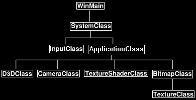

Being able to render 2D images to the screen is very useful.
For example, most user interfaces, sprite systems, and text engines are made up of 2D images.
DirectX 11 allows you to render 2D images by mapping them to polygons and then rendering using an orthographic projection matrix.
2D Screen Coordinates
To render 2D images to the screen you will need to calculate the screen X and Y coordinates.
For DirectX the middle of the screen is 0,0.
From there the left side of the screen and the bottom side of the screen go in the negative direction.
The right side of the screen and the top of the screen go in the positive direction.
As an example, take a screen that is 1024x768 resolution, the coordinates for the borders of the screen would be as follows:

So, keep in mind that all your 2D rendering will need to work with these screen coordinate calculations and that you will also need the size of the user's window/screen for correct placement of 2D images.
Disabling Z buffer in DirectX 11
To draw in 2D you should be disabling the Z buffer.
When the Z buffer is turned off it will write the 2D data over top of whatever is in that pixel location.
Make sure to use the painter's algorithm and draw from the back to the front to ensure you get your expected rendering output.
Once you are done drawing 2D graphics re-enable the Z buffer again so you can render 3D objects properly again.
To turn the Z buffer on and off you will need to create a second depth stencil state the same as your 3D one except with DepthEnable set to false.
Then just use OMSetDepthStencilState to switch between the two states to turn the Z buffer on and off.
Dynamic Vertex Buffers
Another new concept that will be introduced is dynamic vertex buffers.
So far, we have used static vertex buffers in the previous tutorials.
The issue with static vertex buffers is that you can't change the data inside the buffer ever.
Dynamic vertex buffers on the other hand allow us to manipulate the information inside the vertex buffer each frame if we need to.
These buffers are much slower than static vertex buffers but that is the tradeoff for the extra functionality.
The reason we use dynamic vertex buffers with 2D rendering is because we often want to move the 2D image around the screen to different locations.
A good example is a mouse pointer, it gets moved often so the vertex data that represents its position on the screen needs to change often as well.
Two extra things to note.
Don't use dynamic vertex buffers unless they are absolutely called for, they are quite a bit slower than static buffers.
Secondly never destroy and recreate a static vertex buffer each frame, this can completely lock the video card (which I have seen on ATI but not on Nvidia)
and is far worse in overall performance when compared to using dynamic vertex buffers.
Orthographic Projection in DirectX 11
The final new concept required to render in 2D is to use an orthographic projection matrix in place of the regular 3D projection matrix.
This will allow you to render to 2D screen coordinates.
Remember that we already did create this matrix in the Direct3D initialization code:
// Create an orthographic projection matrix for 2D rendering.
D3DXMatrixOrthoLH(&m_orthoMatrix, (float)screenWidth, (float)screenHeight, screenNear, screenDepth);
And to retrieve the ortho matrix for rendering we just call D3DClass::GetOrthoMatrix().
Framework
The code in this tutorial is based on the previous tutorials.
The major difference in this tutorial is that ModelClass has been replaced with BitmapClass and that we are using the TextureShaderClass again instead of the LightShaderClass.
The framework will look like the following:

Bitmapclass.h
BitmapClass will be used to represent an individual 2D image that needs to be rendered to the screen.
For every 2D image you have you will need a new BitmapClass for each.
Note that this class is just the ModelClass re-written to handle 2D images instead of 3D objects.
////////////////////////////////////////////////////////////////////////////////
// Filename: bitmapclass.h
////////////////////////////////////////////////////////////////////////////////
#ifndef _BITMAPCLASS_H_
#define _BITMAPCLASS_H_
//////////////
// INCLUDES //
//////////////
#include <directxmath.h>
using namespace DirectX;
///////////////////////
// MY CLASS INCLUDES //
///////////////////////
#include "textureclass.h"
////////////////////////////////////////////////////////////////////////////////
// Class name: BitmapClass
////////////////////////////////////////////////////////////////////////////////
class BitmapClass
{
private:
Each bitmap image is still a polygon object that gets rendered similar to 3D objects.
For 2D images we just need a position vector and texture coordinates.
struct VertexType
{
XMFLOAT3 position;
XMFLOAT2 texture;
};
public:
BitmapClass();
BitmapClass(const BitmapClass&);
~BitmapClass();
bool Initialize(ID3D11Device*, ID3D11DeviceContext*, int, int, char*, int, int);
void Shutdown();
bool Render(ID3D11DeviceContext*);
int GetIndexCount();
ID3D11ShaderResourceView* GetTexture();
void SetRenderLocation(int, int);
private:
bool InitializeBuffers(ID3D11Device*);
void ShutdownBuffers();
bool UpdateBuffers(ID3D11DeviceContext*);
void RenderBuffers(ID3D11DeviceContext*);
bool LoadTexture(ID3D11Device*, ID3D11DeviceContext*, char*);
void ReleaseTexture();
The BitmapClass will need to maintain some extra information that a 3D model wouldn't such as the screen size, the bitmap size, and the last place it was rendered.
We have added extra private variables here to track that extra information.
private:
ID3D11Buffer *m_vertexBuffer, *m_indexBuffer;
int m_vertexCount, m_indexCount, m_screenWidth, m_screenHeight, m_bitmapWidth, m_bitmapHeight, m_renderX, m_renderY, m_prevPosX, m_prevPosY;
TextureClass* m_Texture;
};
#endif
Bitmapclass.cpp
////////////////////////////////////////////////////////////////////////////////
// Filename: bitmapclass.cpp
////////////////////////////////////////////////////////////////////////////////
#include "bitmapclass.h"
The class constructor initializes all the private pointers in the class.
BitmapClass::BitmapClass()
{
m_vertexBuffer = 0;
m_indexBuffer = 0;
m_Texture = 0;
}
BitmapClass::BitmapClass(const BitmapClass& other)
{
}
BitmapClass::~BitmapClass()
{
}
bool BitmapClass::Initialize(ID3D11Device* device, ID3D11DeviceContext* deviceContext, int screenWidth, int screenHeight, char* textureFilename, int renderX, int renderY)
{
bool result;
In the Initialize function both the screen size and where the image gets rendered is stored.
These will be required for generating exact vertex locations during rendering.
// Store the screen size.
m_screenWidth = screenWidth;
m_screenHeight = screenHeight;
// Store where the bitmap should be rendered to.
m_renderX = renderX;
m_renderY = renderY;
The buffers are then created and the texture for this bitmap image is also loaded in.
// Initialize the vertex and index buffer that hold the geometry for the bitmap quad.
result = InitializeBuffers(device);
if(!result)
{
return false;
}
// Load the texture for this bitmap.
result = LoadTexture(device, deviceContext, textureFilename);
if(!result)
{
return false;
}
return true;
}
The Shutdown function will release the vertex and index buffers as well as the texture that was used for the bitmap image.
void BitmapClass::Shutdown()
{
// Release the bitmap texture.
ReleaseTexture();
// Release the vertex and index buffers.
ShutdownBuffers();
return;
}
Render puts the buffers of the 2D image on the video card.
The UpdateBuffers function is called with the position parameters.
If the position has changed since the last frame, it will then update the location of the vertices in the dynamic vertex buffer to the new location.
If not, it will skip the UpdateBuffers function.
After that the texture for the bitmap is set and the RenderBuffers function will prepare the final vertices/indices for rendering.
bool BitmapClass::Render(ID3D11DeviceContext* deviceContext)
{
bool result;
// Update the buffers if the position of the bitmap has changed from its original position.
result = UpdateBuffers(deviceContext);
if(!result)
{
return false;
}
// Put the vertex and index buffers on the graphics pipeline to prepare them for drawing.
RenderBuffers(deviceContext);
return true;
}
GetIndexCount returns the number of indexes for the 2D image.
This will pretty much always be six.
int BitmapClass::GetIndexCount()
{
return m_indexCount;
}
The GetTexture function returns a pointer to the texture resource for this 2D image.
The shader will call this function so it has access to the image when drawing the buffers.
ID3D11ShaderResourceView* BitmapClass::GetTexture()
{
return m_Texture->GetTexture();
}
InitializeBuffers is the function that is used to build the vertex and index buffer that will be used to draw the 2D image.
bool BitmapClass::InitializeBuffers(ID3D11Device* device)
{
VertexType* vertices;
unsigned long* indices;
D3D11_BUFFER_DESC vertexBufferDesc, indexBufferDesc;
D3D11_SUBRESOURCE_DATA vertexData, indexData;
HRESULT result;
int i;
The previous rendering location is first initialized to negative one.
This will be an important variable that will locate where it last drew this image.
If the image location hasn't changed since last frame, then it won't modify the dynamic vertex buffer which will save us some cycles.
// Initialize the previous rendering position to negative one.
m_prevPosX = -1;
m_prevPosY = -1;
We set the vertices to six since we are making a square out of two triangles, so six points are needed.
The indices will be the same.
// Set the number of vertices in the vertex array.
m_vertexCount = 6;
// Set the number of indices in the index array.
m_indexCount = m_vertexCount;
// Create the vertex array.
vertices = new VertexType[m_vertexCount];
// Create the index array.
indices = new unsigned long[m_indexCount];
// Initialize vertex array to zeros at first.
memset(vertices, 0, (sizeof(VertexType) * m_vertexCount));
// Load the index array with data.
for(i=0; i<m_indexCount; i++)
{
indices[i] = i;
}
Here is the big change in comparison to the ModelClass.
We are now creating a dynamic vertex buffer so we can modify the data inside the vertex buffer each frame if we need to.
To make it dynamic we set Usage to D3D11_USAGE_DYNAMIC and CPUAccessFlags to D3D11_CPU_ACCESS_WRITE in the description.
// Set up the description of the dynamic vertex buffer.
vertexBufferDesc.Usage = D3D11_USAGE_DYNAMIC;
vertexBufferDesc.ByteWidth = sizeof(VertexType) * m_vertexCount;
vertexBufferDesc.BindFlags = D3D11_BIND_VERTEX_BUFFER;
vertexBufferDesc.CPUAccessFlags = D3D11_CPU_ACCESS_WRITE;
vertexBufferDesc.MiscFlags = 0;
vertexBufferDesc.StructureByteStride = 0;
// Give the subresource structure a pointer to the vertex data.
vertexData.pSysMem = vertices;
vertexData.SysMemPitch = 0;
vertexData.SysMemSlicePitch = 0;
// Now finally create the vertex buffer.
result = device->CreateBuffer(&vertexBufferDesc, &vertexData, &m_vertexBuffer);
if(FAILED(result))
{
return false;
}
We don't need to make the index buffer dynamic since the six indices will always point to the same six vertices even though the coordinates of the vertex may change.
// Set up the description of the index buffer.
indexBufferDesc.Usage = D3D11_USAGE_DEFAULT;
indexBufferDesc.ByteWidth = sizeof(unsigned long) * m_indexCount;
indexBufferDesc.BindFlags = D3D11_BIND_INDEX_BUFFER;
indexBufferDesc.CPUAccessFlags = 0;
indexBufferDesc.MiscFlags = 0;
indexBufferDesc.StructureByteStride = 0;
// Give the subresource structure a pointer to the index data.
indexData.pSysMem = indices;
indexData.SysMemPitch = 0;
indexData.SysMemSlicePitch = 0;
// Create the index buffer.
result = device->CreateBuffer(&indexBufferDesc, &indexData, &m_indexBuffer);
if(FAILED(result))
{
return false;
}
// Release the arrays now that the vertex and index buffers have been created and loaded.
delete [] vertices;
vertices = 0;
delete [] indices;
indices = 0;
return true;
}
ShutdownBuffers releases the vertex and index buffers.
void BitmapClass::ShutdownBuffers()
{
// Release the index buffer.
if(m_indexBuffer)
{
m_indexBuffer->Release();
m_indexBuffer = 0;
}
// Release the vertex buffer.
if(m_vertexBuffer)
{
m_vertexBuffer->Release();
m_vertexBuffer = 0;
}
return;
}
The UpdateBuffers function is called each frame to update the contents of the dynamic vertex buffer to re-position the 2D bitmap image on the screen if need be.
bool BitmapClass::UpdateBuffers(ID3D11DeviceContext* deviceContent)
{
float left, right, top, bottom;
VertexType* vertices;
D3D11_MAPPED_SUBRESOURCE mappedResource;
VertexType* dataPtr;
HRESULT result;
We check if the position to render this image has changed.
If it hasn't changed then we just exit since the vertex buffer doesn't need any changes for this frame.
This check can save us a lot of processing.
// If the position we are rendering this bitmap to hasn't changed then don't update the vertex buffer.
if((m_prevPosX == m_renderX) && (m_prevPosY == m_renderY))
{
return true;
}
If the position to render this image has changed then we record the new location for the next time we come through this function.
// If the rendering location has changed then store the new position and update the vertex buffer.
m_prevPosX = m_renderX;
m_prevPosY = m_renderY;
// Create the vertex array.
vertices = new VertexType[m_vertexCount];
The four sides of the image need to be calculated. See the diagram at the top of the tutorial for a complete explanation.
// Calculate the screen coordinates of the left side of the bitmap.
left = (float)((m_screenWidth / 2) * -1) + (float)m_renderX;
// Calculate the screen coordinates of the right side of the bitmap.
right = left + (float)m_bitmapWidth;
// Calculate the screen coordinates of the top of the bitmap.
top = (float)(m_screenHeight / 2) - (float)m_renderY;
// Calculate the screen coordinates of the bottom of the bitmap.
bottom = top - (float)m_bitmapHeight;
Now that the coordinates are calculated create a temporary vertex array and fill it with the new six vertex points.
// Load the vertex array with data.
// First triangle.
vertices[0].position = XMFLOAT3(left, top, 0.0f); // Top left.
vertices[0].texture = XMFLOAT2(0.0f, 0.0f);
vertices[1].position = XMFLOAT3(right, bottom, 0.0f); // Bottom right.
vertices[1].texture = XMFLOAT2(1.0f, 1.0f);
vertices[2].position = XMFLOAT3(left, bottom, 0.0f); // Bottom left.
vertices[2].texture = XMFLOAT2(0.0f, 1.0f);
// Second triangle.
vertices[3].position = XMFLOAT3(left, top, 0.0f); // Top left.
vertices[3].texture = XMFLOAT2(0.0f, 0.0f);
vertices[4].position = XMFLOAT3(right, top, 0.0f); // Top right.
vertices[4].texture = XMFLOAT2(1.0f, 0.0f);
vertices[5].position = XMFLOAT3(right, bottom, 0.0f); // Bottom right.
vertices[5].texture = XMFLOAT2(1.0f, 1.0f);
Now copy the contents of the vertex array into the vertex buffer using the Map and memcpy functions.
// Lock the vertex buffer.
result = deviceContent->Map(m_vertexBuffer, 0, D3D11_MAP_WRITE_DISCARD, 0, &mappedResource);
if(FAILED(result))
{
return false;
}
// Get a pointer to the data in the constant buffer.
dataPtr = (VertexType*)mappedResource.pData;
// Copy the data into the vertex buffer.
memcpy(dataPtr, (void*)vertices, (sizeof(VertexType) * m_vertexCount));
// Unlock the vertex buffer.
deviceContent->Unmap(m_vertexBuffer, 0);
// Release the pointer reference.
dataPtr = 0;
// Release the vertex array as it is no longer needed.
delete [] vertices;
vertices = 0;
return true;
}
The RenderBuffers function sets up the vertex and index buffers on the gpu to be drawn by the shader.
void BitmapClass::RenderBuffers(ID3D11DeviceContext* deviceContext)
{
unsigned int stride;
unsigned int offset;
// Set vertex buffer stride and offset.
stride = sizeof(VertexType);
offset = 0;
// Set the vertex buffer to active in the input assembler so it can be rendered.
deviceContext->IASetVertexBuffers(0, 1, &m_vertexBuffer, &stride, &offset);
// Set the index buffer to active in the input assembler so it can be rendered.
deviceContext->IASetIndexBuffer(m_indexBuffer, DXGI_FORMAT_R32_UINT, 0);
// Set the type of primitive that should be rendered from this vertex buffer, in this case triangles.
deviceContext->IASetPrimitiveTopology(D3D11_PRIMITIVE_TOPOLOGY_TRIANGLELIST);
return;
}
The following function loads the texture that will be used for drawing the 2D image.
bool BitmapClass::LoadTexture(ID3D11Device* device, ID3D11DeviceContext* deviceContext, char* filename)
{
bool result;
// Create and initialize the texture object.
m_Texture = new TextureClass;
result = m_Texture->Initialize(device, deviceContext, filename);
if(!result)
{
return false;
}
// Store the size in pixels that this bitmap should be rendered at.
m_bitmapWidth = m_Texture->GetWidth();
m_bitmapHeight = m_Texture->GetHeight();
return true;
}
This ReleaseTexture function releases the texture that was loaded.
void BitmapClass::ReleaseTexture()
{
// Release the texture object.
if(m_Texture)
{
m_Texture->Shutdown();
delete m_Texture;
m_Texture = 0;
}
return;
}
The SetRenderLocation function allows you to change where the bitmap image is being rendered on the screen using 2D coordinates.
void BitmapClass::SetRenderLocation(int x, int y)
{
m_renderX = x;
m_renderY = y;
return;
}
D3dclass.h
The D3DClass has been modified to handle enabling and disabling the Z buffer.
////////////////////////////////////////////////////////////////////////////////
// Filename: d3dclass.h
////////////////////////////////////////////////////////////////////////////////
#ifndef _D3DCLASS_H_
#define _D3DCLASS_H_
/////////////
// LINKING //
/////////////
#pragma comment(lib, "d3d11.lib")
#pragma comment(lib, "dxgi.lib")
#pragma comment(lib, "d3dcompiler.lib")
//////////////
// INCLUDES //
//////////////
#include <d3d11.h>
#include <directxmath.h>
using namespace DirectX;
////////////////////////////////////////////////////////////////////////////////
// Class name: D3DClass
////////////////////////////////////////////////////////////////////////////////
class D3DClass
{
public:
D3DClass();
D3DClass(const D3DClass&);
~D3DClass();
bool Initialize(int, int, bool, HWND, bool, float, float);
void Shutdown();
void BeginScene(float, float, float, float);
void EndScene();
ID3D11Device* GetDevice();
ID3D11DeviceContext* GetDeviceContext();
void GetProjectionMatrix(XMMATRIX&);
void GetWorldMatrix(XMMATRIX&);
void GetOrthoMatrix(XMMATRIX&);
void GetVideoCardInfo(char*, int&);
void SetBackBufferRenderTarget();
void ResetViewport();
We now have two new functions in the D3DClass for turning the Z buffer on and off when rendering 2D images.
void TurnZBufferOn();
void TurnZBufferOff();
private:
bool m_vsync_enabled;
int m_videoCardMemory;
char m_videoCardDescription[128];
IDXGISwapChain* m_swapChain;
ID3D11Device* m_device;
ID3D11DeviceContext* m_deviceContext;
ID3D11RenderTargetView* m_renderTargetView;
ID3D11Texture2D* m_depthStencilBuffer;
ID3D11DepthStencilState* m_depthStencilState;
ID3D11DepthStencilView* m_depthStencilView;
ID3D11RasterizerState* m_rasterState;
XMMATRIX m_projectionMatrix;
XMMATRIX m_worldMatrix;
XMMATRIX m_orthoMatrix;
D3D11_VIEWPORT m_viewport;
There is also a new depth stencil state for 2D drawing.
ID3D11DepthStencilState* m_depthDisabledStencilState;
};
#endif
D3dclass.cpp
////////////////////////////////////////////////////////////////////////////////
// Filename: d3dclass.cpp
////////////////////////////////////////////////////////////////////////////////
#include "d3dclass.h"
D3DClass::D3DClass()
{
m_swapChain = 0;
m_device = 0;
m_deviceContext = 0;
m_renderTargetView = 0;
m_depthStencilBuffer = 0;
m_depthStencilState = 0;
m_depthStencilView = 0;
m_rasterState = 0;
Initialize the new depth stencil state to null in the class constructor.
m_depthDisabledStencilState = 0;
}
D3DClass::D3DClass(const D3DClass& other)
{
}
D3DClass::~D3DClass()
{
}
bool D3DClass::Initialize(int screenWidth, int screenHeight, bool vsync, HWND hwnd, bool fullscreen,
float screenDepth, float screenNear)
{
HRESULT result;
IDXGIFactory* factory;
IDXGIAdapter* adapter;
IDXGIOutput* adapterOutput;
unsigned int numModes, i, numerator, denominator;
unsigned long long stringLength;
DXGI_MODE_DESC* displayModeList;
DXGI_ADAPTER_DESC adapterDesc;
int error;
DXGI_SWAP_CHAIN_DESC swapChainDesc;
D3D_FEATURE_LEVEL featureLevel;
ID3D11Texture2D* backBufferPtr;
D3D11_TEXTURE2D_DESC depthBufferDesc;
D3D11_DEPTH_STENCIL_DESC depthStencilDesc;
D3D11_DEPTH_STENCIL_VIEW_DESC depthStencilViewDesc;
D3D11_RASTERIZER_DESC rasterDesc;
float fieldOfView, screenAspect;
We have a new depth stencil description variable for setting up the new depth stencil.
D3D11_DEPTH_STENCIL_DESC depthDisabledStencilDesc;
// Store the vsync setting.
m_vsync_enabled = vsync;
// Create a DirectX graphics interface factory.
result = CreateDXGIFactory(__uuidof(IDXGIFactory), (void**)&factory);
if(FAILED(result))
{
return false;
}
// Use the factory to create an adapter for the primary graphics interface (video card).
result = factory->EnumAdapters(0, &adapter);
if(FAILED(result))
{
return false;
}
// Enumerate the primary adapter output (monitor).
result = adapter->EnumOutputs(0, &adapterOutput);
if(FAILED(result))
{
return false;
}
// Get the number of modes that fit the DXGI_FORMAT_R8G8B8A8_UNORM display format for the adapter output (monitor).
result = adapterOutput->GetDisplayModeList(DXGI_FORMAT_R8G8B8A8_UNORM, DXGI_ENUM_MODES_INTERLACED, &numModes, NULL);
if(FAILED(result))
{
return false;
}
// Create a list to hold all the possible display modes for this monitor/video card combination.
displayModeList = new DXGI_MODE_DESC[numModes];
if(!displayModeList)
{
return false;
}
// Now fill the display mode list structures.
result = adapterOutput->GetDisplayModeList(DXGI_FORMAT_R8G8B8A8_UNORM, DXGI_ENUM_MODES_INTERLACED, &numModes, displayModeList);
if(FAILED(result))
{
return false;
}
// Now go through all the display modes and find the one that matches the screen width and height.
// When a match is found store the numerator and denominator of the refresh rate for that monitor.
for(i=0; i<numModes; i++)
{
if(displayModeList[i].Width == (unsigned int)screenWidth)
{
if(displayModeList[i].Height == (unsigned int)screenHeight)
{
numerator = displayModeList[i].RefreshRate.Numerator;
denominator = displayModeList[i].RefreshRate.Denominator;
}
}
}
// Get the adapter (video card) description.
result = adapter->GetDesc(&adapterDesc);
if(FAILED(result))
{
return false;
}
// Store the dedicated video card memory in megabytes.
m_videoCardMemory = (int)(adapterDesc.DedicatedVideoMemory / 1024 / 1024);
// Convert the name of the video card to a character array and store it.
error = wcstombs_s(&stringLength, m_videoCardDescription, 128, adapterDesc.Description, 128);
if(error != 0)
{
return false;
}
// Release the display mode list.
delete [] displayModeList;
displayModeList = 0;
// Release the adapter output.
adapterOutput->Release();
adapterOutput = 0;
// Release the adapter.
adapter->Release();
adapter = 0;
// Release the factory.
factory->Release();
factory = 0;
// Initialize the swap chain description.
ZeroMemory(&swapChainDesc, sizeof(swapChainDesc));
// Set to a single back buffer.
swapChainDesc.BufferCount = 1;
// Set the width and height of the back buffer.
swapChainDesc.BufferDesc.Width = screenWidth;
swapChainDesc.BufferDesc.Height = screenHeight;
// Set regular 32-bit surface for the back buffer.
swapChainDesc.BufferDesc.Format = DXGI_FORMAT_R8G8B8A8_UNORM;
// Set the refresh rate of the back buffer.
if(m_vsync_enabled)
{
swapChainDesc.BufferDesc.RefreshRate.Numerator = numerator;
swapChainDesc.BufferDesc.RefreshRate.Denominator = denominator;
}
else
{
swapChainDesc.BufferDesc.RefreshRate.Numerator = 0;
swapChainDesc.BufferDesc.RefreshRate.Denominator = 1;
}
// Set the usage of the back buffer.
swapChainDesc.BufferUsage = DXGI_USAGE_RENDER_TARGET_OUTPUT;
// Set the handle for the window to render to.
swapChainDesc.OutputWindow = hwnd;
// Turn multisampling off.
swapChainDesc.SampleDesc.Count = 1;
swapChainDesc.SampleDesc.Quality = 0;
// Set to full screen or windowed mode.
if(fullscreen)
{
swapChainDesc.Windowed = false;
}
else
{
swapChainDesc.Windowed = true;
}
// Set the scan line ordering and scaling to unspecified.
swapChainDesc.BufferDesc.ScanlineOrdering = DXGI_MODE_SCANLINE_ORDER_UNSPECIFIED;
swapChainDesc.BufferDesc.Scaling = DXGI_MODE_SCALING_UNSPECIFIED;
// Discard the back buffer contents after presenting.
swapChainDesc.SwapEffect = DXGI_SWAP_EFFECT_DISCARD;
// Don't set the advanced flags.
swapChainDesc.Flags = 0;
// Set the feature level to DirectX 11.
featureLevel = D3D_FEATURE_LEVEL_11_0;
// Create the swap chain, Direct3D device, and Direct3D device context.
result = D3D11CreateDeviceAndSwapChain(NULL, D3D_DRIVER_TYPE_HARDWARE, NULL, 0, &featureLevel, 1,
D3D11_SDK_VERSION, &swapChainDesc, &m_swapChain, &m_device, NULL, &m_deviceContext);
if(FAILED(result))
{
return false;
}
// Get the pointer to the back buffer.
result = m_swapChain->GetBuffer(0, __uuidof(ID3D11Texture2D), (LPVOID*)&backBufferPtr);
if(FAILED(result))
{
return false;
}
// Create the render target view with the back buffer pointer.
result = m_device->CreateRenderTargetView(backBufferPtr, NULL, &m_renderTargetView);
if(FAILED(result))
{
return false;
}
// Release pointer to the back buffer as we no longer need it.
backBufferPtr->Release();
backBufferPtr = 0;
// Initialize the description of the depth buffer.
ZeroMemory(&depthBufferDesc, sizeof(depthBufferDesc));
// Set up the description of the depth buffer.
depthBufferDesc.Width = screenWidth;
depthBufferDesc.Height = screenHeight;
depthBufferDesc.MipLevels = 1;
depthBufferDesc.ArraySize = 1;
depthBufferDesc.Format = DXGI_FORMAT_D24_UNORM_S8_UINT;
depthBufferDesc.SampleDesc.Count = 1;
depthBufferDesc.SampleDesc.Quality = 0;
depthBufferDesc.Usage = D3D11_USAGE_DEFAULT;
depthBufferDesc.BindFlags = D3D11_BIND_DEPTH_STENCIL;
depthBufferDesc.CPUAccessFlags = 0;
depthBufferDesc.MiscFlags = 0;
// Create the texture for the depth buffer using the filled out description.
result = m_device->CreateTexture2D(&depthBufferDesc, NULL, &m_depthStencilBuffer);
if(FAILED(result))
{
return false;
}
// Initialize the description of the stencil state.
ZeroMemory(&depthStencilDesc, sizeof(depthStencilDesc));
// Set up the description of the stencil state.
depthStencilDesc.DepthEnable = true;
depthStencilDesc.DepthWriteMask = D3D11_DEPTH_WRITE_MASK_ALL;
depthStencilDesc.DepthFunc = D3D11_COMPARISON_LESS;
depthStencilDesc.StencilEnable = true;
depthStencilDesc.StencilReadMask = 0xFF;
depthStencilDesc.StencilWriteMask = 0xFF;
// Stencil operations if pixel is front-facing.
depthStencilDesc.FrontFace.StencilFailOp = D3D11_STENCIL_OP_KEEP;
depthStencilDesc.FrontFace.StencilDepthFailOp = D3D11_STENCIL_OP_INCR;
depthStencilDesc.FrontFace.StencilPassOp = D3D11_STENCIL_OP_KEEP;
depthStencilDesc.FrontFace.StencilFunc = D3D11_COMPARISON_ALWAYS;
// Stencil operations if pixel is back-facing.
depthStencilDesc.BackFace.StencilFailOp = D3D11_STENCIL_OP_KEEP;
depthStencilDesc.BackFace.StencilDepthFailOp = D3D11_STENCIL_OP_DECR;
depthStencilDesc.BackFace.StencilPassOp = D3D11_STENCIL_OP_KEEP;
depthStencilDesc.BackFace.StencilFunc = D3D11_COMPARISON_ALWAYS;
// Create the depth stencil state.
result = m_device->CreateDepthStencilState(&depthStencilDesc, &m_depthStencilState);
if(FAILED(result))
{
return false;
}
// Set the depth stencil state.
m_deviceContext->OMSetDepthStencilState(m_depthStencilState, 1);
// Initialize the depth stencil view.
ZeroMemory(&depthStencilViewDesc, sizeof(depthStencilViewDesc));
// Set up the depth stencil view description.
depthStencilViewDesc.Format = DXGI_FORMAT_D24_UNORM_S8_UINT;
depthStencilViewDesc.ViewDimension = D3D11_DSV_DIMENSION_TEXTURE2D;
depthStencilViewDesc.Texture2D.MipSlice = 0;
// Create the depth stencil view.
result = m_device->CreateDepthStencilView(m_depthStencilBuffer, &depthStencilViewDesc, &m_depthStencilView);
if(FAILED(result))
{
return false;
}
// Bind the render target view and depth stencil buffer to the output render pipeline.
m_deviceContext->OMSetRenderTargets(1, &m_renderTargetView, m_depthStencilView);
// Setup the raster description which will determine how and what polygons will be drawn.
rasterDesc.AntialiasedLineEnable = false;
rasterDesc.CullMode = D3D11_CULL_BACK;
rasterDesc.DepthBias = 0;
rasterDesc.DepthBiasClamp = 0.0f;
rasterDesc.DepthClipEnable = true;
rasterDesc.FillMode = D3D11_FILL_SOLID;
rasterDesc.FrontCounterClockwise = false;
rasterDesc.MultisampleEnable = false;
rasterDesc.ScissorEnable = false;
rasterDesc.SlopeScaledDepthBias = 0.0f;
// Create the rasterizer state from the description we just filled out.
result = m_device->CreateRasterizerState(&rasterDesc, &m_rasterState);
if(FAILED(result))
{
return false;
}
// Now set the rasterizer state.
m_deviceContext->RSSetState(m_rasterState);
// Setup the viewport for rendering.
m_viewport.Width = (float)screenWidth;
m_viewport.Height = (float)screenHeight;
m_viewport.MinDepth = 0.0f;
m_viewport.MaxDepth = 1.0f;
m_viewport.TopLeftX = 0.0f;
m_viewport.TopLeftY = 0.0f;
// Create the viewport.
m_deviceContext->RSSetViewports(1, &m_viewport);
// Setup the projection matrix.
fieldOfView = 3.141592654f / 4.0f;
screenAspect = (float)screenWidth / (float)screenHeight;
// Create the projection matrix for 3D rendering.
m_projectionMatrix = XMMatrixPerspectiveFovLH(fieldOfView, screenAspect, screenNear, screenDepth);
// Initialize the world matrix to the identity matrix.
m_worldMatrix = XMMatrixIdentity();
// Create an orthographic projection matrix for 2D rendering.
m_orthoMatrix = XMMatrixOrthographicLH((float)screenWidth, (float)screenHeight, screenNear, screenDepth);
Here we setup the description of the depth stencil.
Notice the only difference between this new depth stencil and the old one is the DepthEnable is set to false here for 2D drawing.
// Clear the second depth stencil state before setting the parameters.
ZeroMemory(&depthDisabledStencilDesc, sizeof(depthDisabledStencilDesc));
// Now create a second depth stencil state which turns off the Z buffer for 2D rendering. The only difference is
// that DepthEnable is set to false, all other parameters are the same as the other depth stencil state.
depthDisabledStencilDesc.DepthEnable = false;
depthDisabledStencilDesc.DepthWriteMask = D3D11_DEPTH_WRITE_MASK_ALL;
depthDisabledStencilDesc.DepthFunc = D3D11_COMPARISON_LESS;
depthDisabledStencilDesc.StencilEnable = true;
depthDisabledStencilDesc.StencilReadMask = 0xFF;
depthDisabledStencilDesc.StencilWriteMask = 0xFF;
depthDisabledStencilDesc.FrontFace.StencilFailOp = D3D11_STENCIL_OP_KEEP;
depthDisabledStencilDesc.FrontFace.StencilDepthFailOp = D3D11_STENCIL_OP_INCR;
depthDisabledStencilDesc.FrontFace.StencilPassOp = D3D11_STENCIL_OP_KEEP;
depthDisabledStencilDesc.FrontFace.StencilFunc = D3D11_COMPARISON_ALWAYS;
depthDisabledStencilDesc.BackFace.StencilFailOp = D3D11_STENCIL_OP_KEEP;
depthDisabledStencilDesc.BackFace.StencilDepthFailOp = D3D11_STENCIL_OP_DECR;
depthDisabledStencilDesc.BackFace.StencilPassOp = D3D11_STENCIL_OP_KEEP;
depthDisabledStencilDesc.BackFace.StencilFunc = D3D11_COMPARISON_ALWAYS;
Now create the new depth stencil.
// Create the state using the device.
result = m_device->CreateDepthStencilState(&depthDisabledStencilDesc, &m_depthDisabledStencilState);
if(FAILED(result))
{
return false;
}
return true;
}
void D3DClass::Shutdown()
{
// Before shutting down set to windowed mode or when you release the swap chain it will throw an exception.
if(m_swapChain)
{
m_swapChain->SetFullscreenState(false, NULL);
}
Here we release the new depth stencil during the Shutdown function.
if(m_depthDisabledStencilState)
{
m_depthDisabledStencilState->Release();
m_depthDisabledStencilState = 0;
}
if(m_rasterState)
{
m_rasterState->Release();
m_rasterState = 0;
}
if(m_depthStencilView)
{
m_depthStencilView->Release();
m_depthStencilView = 0;
}
if(m_depthStencilState)
{
m_depthStencilState->Release();
m_depthStencilState = 0;
}
if(m_depthStencilBuffer)
{
m_depthStencilBuffer->Release();
m_depthStencilBuffer = 0;
}
if(m_renderTargetView)
{
m_renderTargetView->Release();
m_renderTargetView = 0;
}
if(m_deviceContext)
{
m_deviceContext->Release();
m_deviceContext = 0;
}
if(m_device)
{
m_device->Release();
m_device = 0;
}
if(m_swapChain)
{
m_swapChain->Release();
m_swapChain = 0;
}
return;
}
void D3DClass::BeginScene(float red, float green, float blue, float alpha)
{
float color[4];
// Setup the color to clear the buffer to.
color[0] = red;
color[1] = green;
color[2] = blue;
color[3] = alpha;
// Clear the back buffer.
m_deviceContext->ClearRenderTargetView(m_renderTargetView, color);
// Clear the depth buffer.
m_deviceContext->ClearDepthStencilView(m_depthStencilView, D3D11_CLEAR_DEPTH, 1.0f, 0);
return;
}
void D3DClass::EndScene()
{
// Present the back buffer to the screen since rendering is complete.
if(m_vsync_enabled)
{
// Lock to screen refresh rate.
m_swapChain->Present(1, 0);
}
else
{
// Present as fast as possible.
m_swapChain->Present(0, 0);
}
return;
}
ID3D11Device* D3DClass::GetDevice()
{
return m_device;
}
ID3D11DeviceContext* D3DClass::GetDeviceContext()
{
return m_deviceContext;
}
void D3DClass::GetProjectionMatrix(XMMATRIX& projectionMatrix)
{
projectionMatrix = m_projectionMatrix;
return;
}
void D3DClass::GetWorldMatrix(XMMATRIX& worldMatrix)
{
worldMatrix = m_worldMatrix;
return;
}
void D3DClass::GetOrthoMatrix(XMMATRIX& orthoMatrix)
{
orthoMatrix = m_orthoMatrix;
return;
}
void D3DClass::GetVideoCardInfo(char* cardName, int& memory)
{
strcpy_s(cardName, 128, m_videoCardDescription);
memory = m_videoCardMemory;
return;
}
void D3DClass::SetBackBufferRenderTarget()
{
// Bind the render target view and depth stencil buffer to the output render pipeline.
m_deviceContext->OMSetRenderTargets(1, &m_renderTargetView, m_depthStencilView);
return;
}
void D3DClass::ResetViewport()
{
// Set the viewport.
m_deviceContext->RSSetViewports(1, &m_viewport);
return;
}
These are the new functions for enabling and disabling the Z buffer.
To turn Z buffering on we set the original depth stencil.
To turn Z buffering off we set the new depth stencil that has depthEnable set to false.
Generally, the best way to use these functions is first do all your 3D rendering, then turn the Z buffer off and do your 2D rendering, and then turn the Z buffer on again.
void D3DClass::TurnZBufferOn()
{
m_deviceContext->OMSetDepthStencilState(m_depthStencilState, 1);
return;
}
void D3DClass::TurnZBufferOff()
{
m_deviceContext->OMSetDepthStencilState(m_depthDisabledStencilState, 1);
return;
}
Applicationclass.h
////////////////////////////////////////////////////////////////////////////////
// Filename: applicationclass.h
////////////////////////////////////////////////////////////////////////////////
#ifndef _APPLICATIONCLASS_H_
#define _APPLICATIONCLASS_H_
We include the new BitmapClass header file as well as the texture shader class again.
///////////////////////
// MY CLASS INCLUDES //
///////////////////////
#include "d3dclass.h"
#include "cameraclass.h"
#include "textureshaderclass.h"
#include "bitmapclass.h"
/////////////
// GLOBALS //
/////////////
const bool FULL_SCREEN = false;
const bool VSYNC_ENABLED = true;
const float SCREEN_DEPTH = 1000.0f;
const float SCREEN_NEAR = 0.3f;
////////////////////////////////////////////////////////////////////////////////
// Class name: ApplicationClass
////////////////////////////////////////////////////////////////////////////////
class ApplicationClass
{
public:
ApplicationClass();
ApplicationClass(const ApplicationClass&);
~ApplicationClass();
bool Initialize(int, int, HWND);
void Shutdown();
bool Frame();
private:
bool Render();
private:
D3DClass* m_Direct3D;
CameraClass* m_Camera;
TextureShaderClass* m_TextureShader;
We create a new private BitmapClass object here.
BitmapClass* m_Bitmap;
};
#endif
Applicationclass.cpp
////////////////////////////////////////////////////////////////////////////////
// Filename: applicationclass.cpp
////////////////////////////////////////////////////////////////////////////////
#include "applicationclass.h"
ApplicationClass::ApplicationClass()
{
m_Direct3D = 0;
m_Camera = 0;
m_TextureShader = 0;
m_Bitmap = 0;
}
ApplicationClass::ApplicationClass(const ApplicationClass& other)
{
}
ApplicationClass::~ApplicationClass()
{
}
bool ApplicationClass::Initialize(int screenWidth, int screenHeight, HWND hwnd)
{
char bitmapFilename[128];
bool result;
// Create and initialize the Direct3D object.
m_Direct3D = new D3DClass;
result = m_Direct3D->Initialize(screenWidth, screenHeight, VSYNC_ENABLED, hwnd, FULL_SCREEN, SCREEN_DEPTH, SCREEN_NEAR);
if(!result)
{
MessageBox(hwnd, L"Could not initialize Direct3D", L"Error", MB_OK);
return false;
}
Set the camera back to a default location.
And load the texture shader again.
// Create the camera object.
m_Camera = new CameraClass;
// Set the initial position of the camera.
m_Camera->SetPosition(0.0f, 0.0f, -10.0f);
m_Camera->Render();
// Create and initialize the texture shader object.
m_TextureShader = new TextureShaderClass;
result = m_TextureShader->Initialize(m_Direct3D->GetDevice(), hwnd);
if(!result)
{
MessageBox(hwnd, L"Could not initialize the texture shader object.", L"Error", MB_OK);
return false;
}
Here is where we create and initialize the new BitmapClass object.
It uses the stone01.tga as the texture.
// Set the file name of the bitmap file.
strcpy_s(bitmapFilename, "../Engine/data/stone01.tga");
// Create and initialize the bitmap object.
m_Bitmap = new BitmapClass;
result = m_Bitmap->Initialize(m_Direct3D->GetDevice(), m_Direct3D->GetDeviceContext(), screenWidth, screenHeight, bitmapFilename, 50, 50);
if(!result)
{
return false;
}
return true;
}
void ApplicationClass::Shutdown()
{
The BitmapClass object is released in the Shutdown function.
We also release the texture shader.
// Release the bitmap object.
if(m_Bitmap)
{
m_Bitmap->Shutdown();
delete m_Bitmap;
m_Bitmap = 0;
}
// Release the texture shader object.
if(m_TextureShader)
{
m_TextureShader->Shutdown();
delete m_TextureShader;
m_TextureShader = 0;
}
// Release the camera object.
if(m_Camera)
{
delete m_Camera;
m_Camera = 0;
}
// Release the Direct3D object.
if(m_Direct3D)
{
m_Direct3D->Shutdown();
delete m_Direct3D;
m_Direct3D = 0;
}
return;
}
bool ApplicationClass::Frame()
{
bool result;
// Render the graphics scene.
result = Render();
if(!result)
{
return false;
}
return true;
}
bool ApplicationClass::Render()
{
XMMATRIX worldMatrix, viewMatrix, orthoMatrix;
bool result;
// Clear the buffers to begin the scene.
m_Direct3D->BeginScene(0.0f, 0.0f, 0.0f, 1.0f);
We now also get the ortho matrix from the D3DClass for 2D rendering.
We will pass this in instead of the projection matrix.
// Get the world, view, and projection matrices from the camera and d3d objects.
m_Direct3D->GetWorldMatrix(worldMatrix);
m_Camera->GetViewMatrix(viewMatrix);
m_Direct3D->GetOrthoMatrix(orthoMatrix);
The Z buffer is turned off before we do any 2D rendering.
// Turn off the Z buffer to begin all 2D rendering.
m_Direct3D->TurnZBufferOff();
We then put the bitmap geometry on the pipeline.
// Put the bitmap vertex and index buffers on the graphics pipeline to prepare them for drawing.
result = m_Bitmap->Render(m_Direct3D->GetDeviceContext());
if(!result)
{
return false;
}
Once the vertex/index buffers are prepared we draw them using the texture shader.
Notice we send in the orthoMatrix instead of the projectionMatrix for rendering 2D.
Due note also that if your view matrix is changing you will need to create a default one for 2D rendering and use it instead of the regular view matrix.
In this tutorial using the regular view matrix is fine as the camera in this tutorial is stationary.
// Render the bitmap with the texture shader.
result = m_TextureShader->Render(m_Direct3D->GetDeviceContext(), m_Bitmap->GetIndexCount(), worldMatrix, viewMatrix, orthoMatrix, m_Bitmap->GetTexture());
if(!result)
{
return false;
}
After all the 2D rendering is done we turn the Z buffer back on for the next round of 3D rendering.
// Turn the Z buffer back on now that all 2D rendering has completed.
m_Direct3D->TurnZBufferOn();
// Present the rendered scene to the screen.
m_Direct3D->EndScene();
return true;
}
Summary
With these new concepts we can now render 2D images onto the screen.
This opens the door for rendering user interfaces, font systems, sprites, and more.

To Do Exercises
1. Recompile the code and ensure you get a 2D image drawn to the 50, 50 location on your screen.
2. Change the location on the screen where the image is drawn to.
3. Change the texture that is used for the 2D image.
4. Write a function to dynamically resize the bitmap image.
Source Code
Source Code and Data Files: dx11win10tut12_src.zip